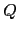
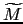
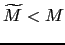
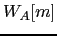
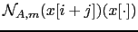
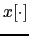
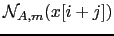

Next: Frame-Based Purification Implementation Up: Frame-Level Cluster Purification Previous: Speech and Non-Speech Modeling Contents
In order to detect and filter out the non-speech frames using the detected likelihood property of the non-speech data, two variants of a likelihood-based metric are proposed.
The two metrics are based in equation 4.15 where  defines the length of an average window and is used to average the measure around the desired value to avoid noisy values;  is the number of Gaussian mixtures used to compute the likelihood (where , the number of mixtures in the model);  is the mixture weight and  is the result of evaluating  on the Gaussian mixture :
user 2008-12-08